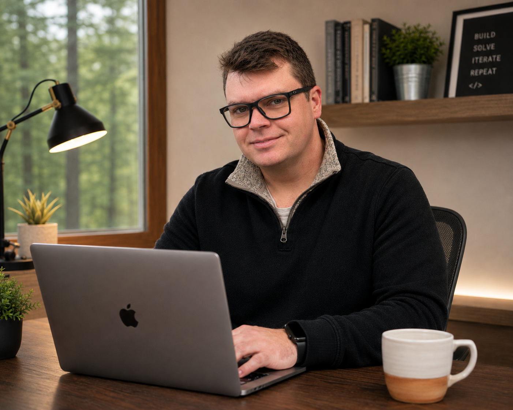
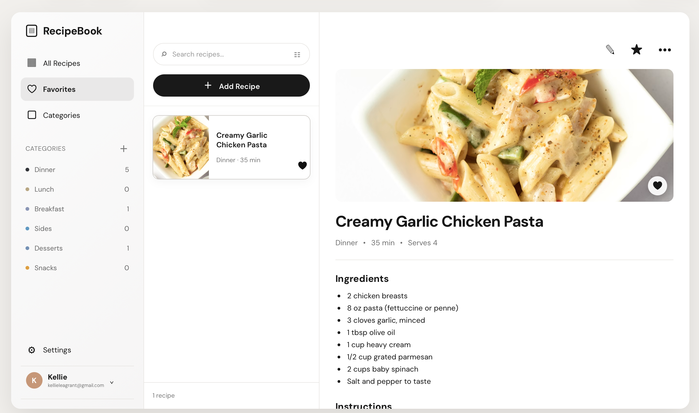
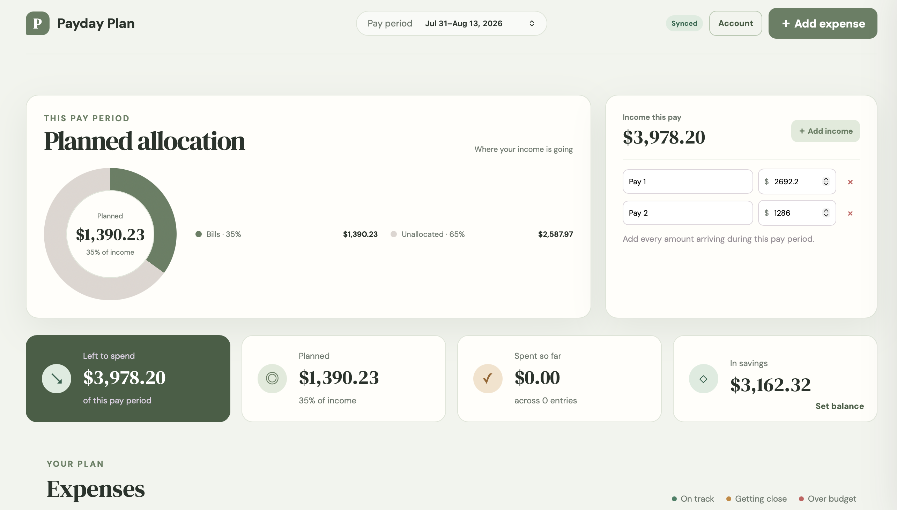

About me
Hi, I’m
Kellie.
Front-end developer, thoughtful problem solver, and lifelong builder based in Perth, Ontario.

I’m a front-end web developer with a passion for building clean, intuitive web applications that solve real problems. I enjoy creating interfaces that are fast, responsive, and easy to use, with a focus on thoughtful design and maintainable code.
My path into software development hasn’t been traditional. For the past several years I’ve worked in the construction industry, where I’ve developed strong problem-solving skills, attention to detail, and the ability to stay calm under pressure. Those same qualities now shape how I approach software development.
I build projects using HTML, CSS, JavaScript, React, and modern development tools, and I enjoy taking an idea from concept to a polished, working application. Recently I’ve been focused on full-stack development, building projects that combine responsive front-end interfaces with authentication, databases, and cloud deployment.
What excites me most about development is the process of turning an idea into something people can actually use. Whether it’s a budgeting application, a recipe manager, or a custom website, I enjoy solving problems through code and continually improving my skills with every project.
When I’m away from the keyboard, you’ll usually find me spending time with my wife and daughter, playing music, following the Toronto Blue Jays, or working on projects around the house.
I’m currently looking for opportunities where I can contribute to meaningful products, continue learning from experienced developers, and grow into a strong software engineering career.
What I build
Useful ideas, carefully made


What’s next
Let’s build something
useful together.
I’m open to front-end and software development opportunities where thoughtful work and continuous learning matter.
Get in touch →